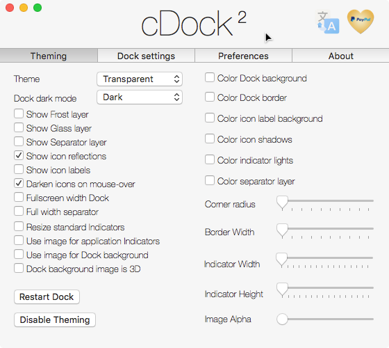

Information:
- cDock installs SIMBL if it is not already installed.
- cDock requires rootless be disbaled on 10.11 for SIMBL install.
- cDock works for all orientations of the Dock.
- Themes are applied for the current user only.
- Source for the bundle that controls the dock can be found here.
- El Capitan warning!
- Colored Finder sidebar is no longer supported.
- With the introduction of the new System Integrity Protection feature in OS X, additional setup steps are required to allow Dock theming.
- Instructions on disabling System Integrity Protection are available here.
- After getting cDock working you can re-enable System Integrity Protection.